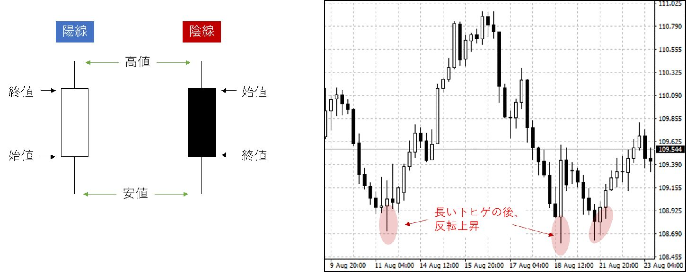

| 元銀行員が教える「一生役立つ」お金の増やし方 | |
| 鈴木拓也 | |
| Hitotsuku Publication (2019) | |
「生活が苦しい」
「将来が不安だ」
「自分を変えたい」
「今よりも生活を豊かにしたい」
「お金を稼げるようになりたい」
こう思っている人は、この書籍が人生を大きく変えるきっかけになるかもしれません。
私は元銀行員として、たくさんの方々の人生を見てきました。
お金持ちの人もいれば、借金まみれの人もいました。
人格者もいれば、詐欺師もいました。
銀行員をしていると、なぜこの人がお金持ちで、なぜこの人が貧乏なのかが手に取るようにわかります。
「お金持ちがどのようにお金を稼いで、何にお金を使うのか」または、「貧乏な人がどのようにお金を稼いで、何にお金を使うのか」を間近で見ることができるので、当然と言えば当然です。
実は、お金持ちになるか、貧乏になるかの見分け方は非常に簡単です。
「お金持ちになるためのノウハウを知っているかどうか」
ただ、それだけです。
お金って実は、稼ぐ方法がかなり限定されています。
その仕組みを知っているかどうかが、お金持ちと貧乏な人の差になっているのです。
お金持ちは、ノウハウに基づいて行動することで、いとも簡単にお金を稼ぎます。
一方で、貧乏な人はノウハウを知らないので、いくら働いても貧乏なままです。
非常にシンプルです。
ノウハウを知っているか否かで、人生が大きく変わるのです。
私もノウハウを知ってから人生が一変しました。
私は静岡県に生まれ、明治大学理工学部を卒業後、東京工業大学大学院修士課程（電子工学専攻）を修了し、大手メガバンクの本店及び香港支店にて為替ディーラー業務を経験しました。
人生が変わったのは、銀行員時代にお金を稼ぐためのノウハウを知ってからです。
自分で、お金を稼ぐことができるようになったことで、組織や誰かのために働く必要がなくなりました。自分の好きなタイミングで好きなことができるようになったのです。
正直、このノウハウを知らなかったら、私はまだ会社員をしていて、上司に怒られ、心を消耗していたことでしょう。
私は、是非あなたにも、自分でお金を稼げるようになってほしいと思っています。
そのために、この書籍にはできるだけ多くの、お金を稼ぐためのノウハウを記載しています。
このノウハウさえ身に付けることができれば、あなたも自然にお金を稼ぐことができるでしょう。
人生はお金が全てではありませんが、お金で解決できることはたくさんあります。
お金で解決できないと思っていたことでも、お金が手に入り心に余裕を持つことで解決できることだってあります。
是非あなたも、お金の束縛から抜け出し、自分の好きな人生を歩んでください。
あなたは資産をどこで管理していますか？
「銀行に預けている」
「定期預金として預けている」
「保険で運用している」
など様々な答えが返ってくるかと思いますが、一番多いのは「銀行に預けている」ではないでしょうか。
給料が毎月銀行に振り込まれてくるから、必要な時に取り出すだけで、特に資産を管理しているイメージはない。という人も多いと思います。
しかし、これでは一向にお金は溜まりません。
と言うより、あなたが銀行に預けているお金の資産価値は減り続けています。
「貯金しているのに価値が減るわけない」という反論が返ってきそうですが、その考え方は危険です。
なぜなら、その考えには、「お金の価値が変わらないとするならば」という前提があるからです。
お金の価値が変わらないのであれば、毎月１万円ずつでも貯金していれば、資産は増え続けるでしょう。
しかし、お金の価値が変わっているとしたらどうでしょうか？
例えば、毎年お金の価値が10
分の１に変わっていたとしたらどうでしょう？
１万円を貯金しても、翌年には千円の価値しかなくなってしまいます。
この例は極端ですが、貯金していれば資産が増え続けるという話は、「お金の価値が変わらないとするならば」という前提が必要だということが、理解できたのではないでしょうか。
そして、残念なことに、日本ではお金の価値が減り続けています。「お金の価値が変わらないとするならば」という前提が崩れているのです。
現在、日本政府は２％
の物価上昇を目標としています。
物価が２％
上昇するということは、今年１００円だったパンが、来年は１０２円出さないと買えなくなるということです。
あなたが今年貯めた１万円は、今使えば１００円のパンを１００個買うことができますが、来年には98
個しか買えなくなるということです。
これって資産の価値が減っていると言えませんか？
徐々に減っているので気付いていないかもしれませんが、あなたの資産は確実に減少しているのです。
毎年「○○が値上がりしました」というニュースが出ますが、そのニュースを聞く度に、「あー、また自分の資産が減った」という感覚を養ってほしいと思います。
お金を銀行に預ける危険性は３つあります。
先程紹介したのが、「物価変動リスク」です。物価が上昇することで相対的に自分の資産が減ってしまうリスクのことを言います。
そして、その他に「破綻リスク」と「政治リスク」というものがあります。
「破綻リスク」というのは読んで字のごとく、銀行が破綻して、預けていたお金が引き出せなくなるリスクです。
今の20
代・30
代の方には馴染みが薄いかもしれませんが、何十年か前は銀行がよく破綻していました。
銀行は「お金を預かってくれるところ」という認識の人がいるかもしれませんが、銀行は慈善事業であなたのお金を保管しているわけではありません。
あなたから預かったお金を運用し、利益を上げることで、銀行業というものが成り立っているのです。
ですから、もし仮にあなたから預かったお金の運用に失敗した時、銀行は破綻せざるを得なくなります。すなわち、あなたにお金が返せなくなるのです（※預金保険制度から一定額は保証されます）。
これが「破綻リスク」です。
続いて「政治リスク」についてですが、これは政府が危機を迎えた時に、個人の口座が封鎖され、国の存続のために利用されるリスクです。
現在、日本政府の借金は天文学的な数字に膨れ上がっています。
「国民１人あたり○○円の借金」といった具合の報道がされ、日本政府は借金が返せないのでは？ という疑問が上がっています。
もし本当に返せなくなったら、政府は国を存続させるために、あなたの資産を凍結して、借金の返済に充てざるを得なくなります。
これが「政治リスク」です。
あなたが銀行に預けていた資産が、ある日突然使えなくなるといった事態は、近い未来起こり得るかもしれないのです。
とは言え、日本政府も銀行も馬鹿ではありませんから、しばらくの間は「破綻リスク」と「政治リスク」に関しては考えなくていいでしょう。
しかし、「物価変動リスク」については真剣に考えないといけません。
なぜなら、政府がわざわざ、「物価を２％
上げます」と宣言してしまっているからです。今まさにリスクに直面しているのです。
銀行にお金を預けても資産が減る今の日本には、「物価変動リスク」よりも更に大きな問題があります。
それが年金問題です。
あなたは年金を貰えると信じていますか？
信じる信じないは個人の自由なのでお任せしますが、確実に言えるのは、年金が貰えなかった時に損をするのはあなただということです。
それでもあなたは、年金を貰えると信じますか？
私は個人的に、年金は貰えるが、貰える金額は下がると考えています。
ただ、もしもの時のことを考えると、年金が貰えないことを想定して資産を形成したほうがいいと言えるでしょう。
60
歳になってから年金が貰えないと分かっても、その歳からではどうしようもないからです。身体が元気な保証もありません。働けない可能性だってあります。
働けなくなってから突然「年金はなくなりました」と言われて、あなたは生きていけますか？
年金は昔60
歳から貰えましたが、今は65
歳からしか貰えないことは、あなたも知っていると思います。
60
歳から年金が貰えると信じて疑わなかった人が、65
歳からしか貰えないとわかった時、どうなっているか知っていますか？
生活費が払えなくなって「老後破綻」しました。あなたもニュースで言葉くらいは聞いたことがあるのではないでしょうか。
年金受給開始年齢が60
歳から65
歳に引き上げられる話は、突然決まった話ではありません。
「いつかは65
歳に引き上がるだろう」と言われていた話です。
にも関わらず、対策をしなかった人がいるのです。そして老後破綻してしまったのです。
これと同じ現象が、私達の世代にも起ころうとしています。
それが、「年金が貰えなくなる」という問題です。
今はまだ、「そんな馬鹿な」と思っている人がいるかもしれませんが、60
歳近くになって、正式に年金がなくなったと言われても対策できません。老後破綻コースまっしぐらです。
誰も、自分が老後破綻するなんて思って生きていません。
しかし、実際に老後破綻した人が何万人もいるのです。
歴史は繰り返します。
何も考えずに生きていると、年をとってから惨めな思いをすることになります。
しかし、今から対策をすれば、老後破綻を回避することは可能です。
早急に対策をしましょう。
ところで、年金が貰えなくても生活できるようにするには、いくらのお金を用意すればいいか知っていますか？
これはネットで調べればすぐに出てきますが、夫婦２人で３０００万円と言われています。
多いと思うか少ないと思うかは見解が分かれるかもしれませんが、30
歳から毎年１００万円を貯めてやっと間に合う計算です。50
代から急に準備しだして間に合う額ではないと言えるでしょう。
しかも、あなたはこれからの人生でたくさんの出費をするはずです。
結婚したり子供ができたり、車や家を買ったりするはずです。その中で毎年１００万円の資産を積み上げていかないと、あなたの老後破綻が現実味を帯びてくるわけです。
ここまで、「物価変動リスク」や「年金」について触れてきましたが、この問題について、「聞いたことはあるけど、そこまで深く考えたことはない」という人が多いと思います。
年金は将来貰えなくなるかもしれないし、将来に備えて銀行にお金を預けても、その価値はどんどん減っていく。
一見絶望的に思えるような問題ですが、解決方法はありますし、実際に対策をしている人は少しずつ増えています。
ですから、「周りがやっていないから自分も大丈夫」という考えは危険です。
あなたの周りにも、対策をしている人は必ずいます。
テストの前に「私、何も勉強してない」と言って、いい点数を取る人って結構たくさんいますよね？
その言葉を聞いて、本当に何もやっていない人が赤点を取るパターンを、あなたも知っているはずです。
お金の問題もこれと一緒です。
みんなの「何もやっていない」に騙されず、徐々に準備を始めましょう。
その準備の仕方について、この書籍では詳しく紹介していきます。
具体的には、マネーリテラシーというものを高めて頂きたいと思います。
マネーリテラシーとは、「金融商品やサービスの選択、または生活設計において、適切に判断するための最低限度身につけるべき知識と判断力」のことを指します。
要は、お金の知識を蓄えましょうということです。
マネーリテラシーを高めることで、あらゆる場面で人生を有利に導くことができます。
例えば、マイホームを買う時です。
借り入れをして家を購入する人が多いですが、月々いくら返済するかによって将来支払うべき金額は大きく変わってきます。
その計算を面倒くさいと思って投げやりにするか、自分で勉強して返済額を決めるかで、将来の負担が大きく変わるのです。
少しお金の勉強をしてマネーリテラシーを高めるだけで、生活が豊かになるのです。
日本人はマネーリテラシーが低いといわれています。
海外と違ってお金のことを学校で教わらないので、仕方がないと言えば仕方がないかもしれません。
しかし、あなたは日本人だからといって、マネーリテラシーが低いままでいますか？
もっとお金の勉強をして、将来のお金の心配を消しませんか？
将来が不安な現代だからこそ、お金の知識をしっかりと身に付けて、資産形成をしっかりとすることが重要になってきます。
２章では、実際にどのように、資産を形成すべきかについて具体的に紹介したいと思います。
このノウハウを習得することで、年金問題など気にもならないくらいの資産を形成することができます。
しっかりとマスターしましょう！
資産を形成する上で、最初にしなければいけないことがあります。
それは「自分自身を知る」ということです。
あなたは、自分が何にお金を使って、どれだけの資産があるのかを正確に把握していますか？
ほとんど人が把握していないのではないでしょうか。
「はじめに」でも紹介しましたが、お金持ちと貧乏な人はお金の使い方が全く違います。
ですから、自分が何にお金を使って、お金持ちとの差が何かを実感するところから始めましょう。
やり方は簡単です。
自分が「消費・浪費・投資」の何に何％
のお金を使っているか分析してください。
「消費：浪費：投資＝○○％
：○○％
：○○％
」といった具合です。
ここで、「消費・浪費・投資」について、分類の仕方を見ていきたいと思います。
まず、「消費」ですが、これは家賃や光熱費・食費があたります。生活に必要不可欠な費用をここに分類してください。
また、「浪費」は、使わなくても生活に支障のない支出を指します。飲み会の費用や趣味・娯楽費などがこれにあたります。
そして「投資」にはＦＸや株式投資といった類のものや、学費や書籍代などの自己投資に使っている費用を分類してください。将来自分に返ってくるようなものがここに該当します。銀行に貯金するお金もここに分類してください。
では、少し時間をおくので実際に分類してみてください。
いかがだったでしょうか？
「消費：浪費：投資＝85
％
：10
％
：５％
」位の割合になる人が多いのではないでしょうか。
残念なことに、この比率に近い人は、いつまでたってもお金持ちにはなれないでしょう。
お金持ちは、「消費：浪費：投資＝70
％
：５％
：25
％
」位と、投資の割合が貧乏な人に比べて圧倒的に高いのです。
あなたがお金持ちになるためには、お金持ちのお金の使い方を真似する必要があります。
お金持ちと同じ割合でお金を使うことで、自然とお金に余裕が生まれ、勝手に資産が形成されるからです。
しかし、中には「消費」を削るのが難しいという人もいるかと思います。
そこでおすすめしたいのが、固定費を削るという手法です。
よく皆さん、節約しようとして変動費を削ります。食費などの金額が変動するものから節約しようとしますが、それでは長続きしません。
もっと根本的な改革が必要です。つまり、変動しない固定費にメスを入れる必要があるのです。
例えば、携帯電話にかかっているお金です。月々１万円近く使用している人もいるかと思いますが、格安スマホなどに切り替えるなど、削減する方法はいくらでもあるはずです。
車の費用も削減すると効果的です。あまり乗らないけど所有している人は多いのではないでしょうか？ 必要な時だけタクシーを使ったほうが安い場合が多いです。
このように、変動費ではなく固定費を見直すことで大規模に支出が改善され、割と簡単に「消費：浪費：投資＝70
％
：5％
：25
％
」を達成することができるはずです。
資産を形成する上では、まず、無駄を減らすことを最優先してください。
どんなに収入が高くても、支出が多い人はお金持ちにはなれません。
無駄を減らして「投資」に回せるお金ができた段階で、まず行ってほしいのが「自己投資」です。
これから資産を形成しようとするのであれば、お金の勉強をしてマネーリテラシーを高める必要があります。
もちろん、この書籍や私のブログでもお金に関することを色々と紹介しているので、積極的に活用して頂きたいのですが、それ以外にも個人的に学習することが大切です。
あなたも薄々気づいていると思いますが、勉強している人ほど、お金持ちになれる可能性が高いです。
高学歴な人ほど年収が高く、学力が低い人は年収が低いです。
しかし、あなたが仮に高学歴でなかったとしても問題ありません。
今から勉強すれば、東京大学出身者よりもお金を得ることは可能です。
東京大学出身の人は、英語・数学・国語はできるかもしれません。しかし、お金の勉強をしてきた訳ではありません。
「英語・数学・国語ができるから能力が高いだろう」と企業に判断して貰え、良い会社に就職できたから収入が高いだけです。
あなたが今からお金の勉強を真剣にすれば、東京大学出身の人よりもお金に詳しくなれますし、たくさんの収入を得ることができるのです。
そのために、「自己投資」というものが重要になるのです。
積極的にお金に関する知識を深め、稼ぐ知識を蓄えましょう！
お金について学習する中で、最も力を入れて勉強して頂きたいのが、「投資」の知識です。
ＦＸや株式投資、不動産投資と呼ばれる類のものです。
元銀行員として、数多くのお金持ちの人を見てきましたが、投資をしていない人はまずいません。
お金を稼ぐ方法には、ビジネスを成功させるか、投資をするしか方法がないと言っても過言ではないので、今具体的に何かビジネスを興そうと考えていないのであれば、迷わず投資をすることがお金持ちへの近道です。
しかも、ビジネスを成功させるより、投資でお金を稼ぐほうが圧倒的に簡単です。
ビジネスは、最初に行動を起こす人が圧倒的に有利な世界です。
今更自動車メーカーを設立しても、まず成功しないでしょう。先駆者とは同じ土俵にすら立てないのです。
それに比べて投資は、始めるタイミングに有利・不利がありません。
どんなに稼いでいるプロとでも、同じ土俵で勝負することができるのです。
しかも、投資には稼げる方法が確立されているので、その方法を自分で実践するだけで成果を上げることができます。
よく、投資と聞いて「怪しい」と感じる人がいますが、実はあなただって投資をしています。
あなたは、銀行にお金を預けていますよね？
それも立派な投資です。
あなたは銀行にお金を預けて、利息を受け取っているはずです。
１年間に１円ほどの利益にしかならないかもしれませんが、その１円を受け取っていることが、あなたが投資をしている証拠になります。
投資とは、資産を増やすためにお金を投じる活動を言います。
銀行に貯金をしても、利益が少ないので、投資をしている認識がないかもしれませんが、銀行にお金を預けることは紛れもなく投資なのです。
実際にバブルの時代には、銀行にお金を投資することでお金を得ている人が、大勢いました。
現在は利率が低いので、銀行に投資をする意味がありませんが、銀行が投資先として人気だった時代があったのです。
しかし、今の日本では銀行にお金を投資しても「物価変動リスク」があるので、資産価値を減らしてしまうだけです。
ですから、私はあなたに、投資先を変えることをおすすめします。
同じ投資をするのであれば、銀行よりももっと利益が出るところに投資をしたほうがいいに決まっています。
元銀行員の私に言わせれば、「何で、今の時代に銀行なんかに投資（貯金）をしているの？」という話です。
銀行にお金を投資しても１年で１円程度にしかなりませんが、他のものに投資をすることで何万円にも何十万円にもなります。
あなたが汗水垂らして働かなくても、お金がお金を稼いできてくれるのです。
投資先を銀行から他のものに変えるだけで、人生が豊かになるのです。
是非あなたも投資先を変えましょう！
私があなたに紹介するのは、資産を安定的に形成する手法としての「投資」です。
短期的に大金を得るためのものではありません。
徐々に、そして安定的に資産を形成するためのものです。
具体的には、資産形成の「長期」「分散」「積立」という考え方に乗っ取って投資を行うことをおすすめしています。
ここでは、この３つの考え方について、それぞれ見ていきたいと思います。
まず、資産は、「長期」の視点で形成する必要があります。
一攫千金を狙うような投資はバクチです。当たる可能性もありますが、外れる可能性のほうが高いです。
投資というものは、理論的には確実に利益を上げることができるものですから、リスクを冒して短期的に利益を取りに行くことは賢明ではありません。
世界の人口は、２０６０年に１００億人を超えると言われています。人口が増えるということは、消費が増え、経済が成長するということです。
今の日本のように、人口が減少して経済が縮小している国に資産を置いても、資産は増えませんが、人口が増えて経済が成長している場所へ長期間投資を行うことで、確実に利益を生むことができるのです。
リーマンショックのように一時的に経済が失速することもありますが、人口が増え続けている限り、経済が伸び続けることは歴史が証明しているので、投資を行うことで確実に資産を増やせるのです。
また、資産は「分散」させる必要があると言われています。
投資先を分散させることで、リスクを回避することができるのです。
日本の銀行だけにお金を置いておくと、「物価変動リスク」「破綻リスク」「政治リスク」に見舞われ、資産を失ってしまう可能性があります。
そこで、投資先を分散させ、リスクが直撃することを避けるのです。
先程も紹介しましたが、世界の経済は長い目で見ると成長を続けています。
世界中の全ての資産の価値が下がることはあり得ないので、仮に１つの投資が失敗したとしても、他の投資によって損失を補うことができるのです。
さらに、資産は徐々に「積立」によって投資することが重要です。
一度に投資を行うのではなく、徐々に、そして定期的に行うのです。
よく、まとまった額をまとめて投資する人がいますが、その時の投資価格が適切な価格とは限りません。不利な価格で購入してしまう可能性だってあります。
そこで、投資するタイミングを分散させ、不利な価格で購入してしまう可能性を減らすことが重要になるのです。
投資を行う上では、短期的に利益を狙うのではなく、ここまで紹介した資産形成の「長期」「分散」「積立」の原則に乗っ取った投資を行うことが重要です。
巷の書籍には、読者の気を引くために、「３か月で30
万円が１億円」といった威勢のいいタイトルがついた本が見かけられますが、元銀行員の私からすれば、あり得ない話です。
そういった情報に騙されることなく、堅実に資産を増やすことができる「投資」手法を学んでいきましょう！
それでは、３章で「投資」の性質をより具体的に、そしてどの投資が優れているのかについて学習していきましょう。
投資を始める上で、最初に理解しておかなければいけないことがあります。
それは、投資がリスクとリターンの関係で成り立っているということです。
リスクが小さいとリターンも小さいですし、リスクが大きいとリターンも大きくなるということです。
このリスクとリターンの関係は、「ハイリスク・ハイリターン」「ミドルリスク・ミドルリターン」「ローリスク・ローリターン」の３つに分類することができます。この３つのそれぞれの性質について触れていきましょう。
「ハイリスク・ハイリターン」の投資は、リスクが大きいですが見返りも大きい投資です。当たれば多くの利益を上げることができますが、外れると資産を失ってしまう危険性があるのが特徴です。最近流行りの仮想通貨が、ハイリスク・ハイリターンな投資と言えるでしょう。
一方で「ローリスク・ローリターン」の投資は、リスクが低いですが、リターンも低いという特徴があり、代表例として「銀行預金」を上げることができます。確かに安全ではありますが、資産を形成する上では不向きだと言えます。
私がおすすめするのが、「ミドルリスク・ミドルリターン」の投資です。
リスクも割と低く、リターンも期待できるので、資産形成には最適です。
大きく資産を減らすような心配も少なく、安定的に利益を積み上げることができるのです。
ミドルリスク・ミドルリターンの投資としては、ＦＸや株式投資、不動産投資を挙げることができます。具体的にこれらがどういった投資なのかは後述しますので、ミドルリスク・ミドルリターンの投資が資産形成に向いているということだけを、忘れないで頂ければと思います。
リスクとリターンの関係以外で、投資の性質を知る上で欠かせない知識というのが、複利効果というものです。
「複利」は20
世紀最大の物理学者と言われるアインシュタインが、20
世紀最大の発明と呼んだもので、投資をする上では非常に重要な考え方です。
複利とは、「元本だけでなく、利息が利息を生む」考え方のことです。
複利と比較されるのが「単利」ですが、これは「元本にだけ利息」がつく考え方です。
例えば、１０００万円あって、毎年10
％
の利息がつく例を見てみましょう。
単利であれば、毎年１００万円が利息となります。
一方で複利は、最初の年こそ１００万円の利息しかつきませんが、２年目は元本の１０００万円に１年目の利息１００万円を加算した１１００万円に、10
％
の利息がつくので、利息は１１０万円になります。
単利と比較すると、２年目は10
万円の差しか付きませんが、３年目は約21
万円、４年目は約34
万円と、雪だるま式に差は広がっていくのです。
あなたが何もしなくても、利息が利息を生む状態をつくり出すことができるのが、この複利の力なのです。
投資を始めたころは資産が少ないのが普通ですから、なかなか複利効果を実感することができないかもしれませんが、将来的には複利の力を使って、利息だけで生活できるようになるはずです。
よく「お金はお金持ちのところに集まる」と言われますが、これはお金持ちが複利効果を利用しているからです。
元本が多くなると、利息が利息を生むので、何もしなくても資産が自動的に増えていくのです。
ここからは、リスクとリターンの関係や複利のことを考慮した上で、どこに投資をすることが資産を増やす上で最も優れているかについて考えてみましょう。
投資先として、ＦＸや仮想通貨、株式投資や不動産投資、そして投資信託やロボアドバイザーが有名ですから、まずはこれらの投資について順を追って紹介したいと思います。
最初は、ＦＸについてです。
ＦＸは、日本「円」や米国「ドル」といった通貨の交換比率が変動することに着目した投資です。「１ドル＝１００円」だとか「１ドル＝１２０円」といった具合に、貨幣の交換比率は常に変動しているので、将来どういった比率になるかを予想して利益を得る投資です。
予想といっても、最近は「１ドル＝１００円」から「１ドル＝１２０円」くらいを一定の法則で行ったり来たりしているだけです。「１ドル＝２００円」や「１ドル＝50
円」なんて価格は現在では考えにくいです。非常に予想しやすいので、投資の初心者でも利益を上げやすいのが特徴です。
次は仮想通貨についてです。仮想通貨は現存しないデジタルな通貨の総称で、「ビットコイン」や「イーサリアム」などが有名です。日本「円」や米国「ドル」は、国が発行している通貨ですが、仮想通貨は個人や組織が発行するという特徴があります。
日本「円」や米国「ドル」に変わる世界共通の通貨が出来るのではないかと期待され、一時期流行った投資ですが、今は人気が沈静化している投資です。資産形成をする上で、反復継続的に投資を行う上では、適した投資対象とは言えないでしょう。
続いて株式投資ですが、これは、株式会社が発行する株式に投資を行うものです。会社の業績が上がると株価が上昇するので、将来どの会社が伸びるかを当てることができれば、大きな利益を得ることができます。
ただ、ビジネスの世界は不透明な部分が多く、大企業でも簡単に潰れてしまう時代です。会社の業績を予想することは非常に困難ですし、時間のかかるものです。
時間があれば挑戦して頂きたいですが、時間がない人には不向きな投資です。
次は、不動産投資についてです。不動産投資は、マンションなどの一室を購入し、賃貸として貸し出すことで家賃収入を得る投資です。
入居者が途絶えないような物件であれば、継続的に家賃収入を得ることができますが、築年数が古くなると借り手がいなくなり、古いマンションだけが手元に残るリスクがあります。
また、マンションの一室を購入するだけの初期費用が必要になるので、投資の初心者がいきなり始めるにはハードルの高い投資と言えます。
その他に、投資信託やロボアドバイザーといった投資の手法もあります。
これは、プロに投資を代行して貰ったり、投資のアドバイスを受けたりすることができるものですが、費用対効果があまりよくありません。ローリスク・ローリターンの投資手法ですから、資産を増やす上ではあまり有効な手段とは言えないでしょう。
私が数ある投資の中で一番おすすめしているのが、ＦＸです。
仮想通貨のようにリスクが極端に高くもなく、かといって投資信託のようにリターンが低すぎるわけでもありません。
資産形成する上でちょうどいい、ミドルリスク・ミドルリターンの投資と言うことができます。
同じミドルリスク・ミドルリターンの投資として、株式投資を上げることができますが、株式投資は９時から15
時までしか取引することができないという難点があります。
サラリーマンであれば、ちょうど仕事をしている時間帯ですから、そもそも取引することができません。
その点、ＦＸであれば24
時間好きな時間に投資をすることができるので、自分が空いている時間を使って資産を運用することができます。
また、ＦＸは多額の初期費用を必要としていません。
不動産投資を始めるためには、マンションの１室を購入するだけの資金を用意する必要がありますが、ＦＸであればレバレッジというものを利用することができるので、少ない資産で始めることができます。
レバレッジとは、自分の資産の何倍ものお金を動かすことができるシステムです。
ＦＸであれば25
倍までレバレッジをかけることができるので、例えば資金が１００万円の人は、２５００万円の資金があるものとして取引することが可能です。
仮に10
％
の利益があるとすると、資金が１００万円だと10
万円の利益ですが、レバレッジを利用して資金が２５００万円あるものとして取引することで、２５０万円もの利益を上げることができるのです。
ＦＸの利点として、投資先が少ないことも上げられます。株式投資は東証１部だけでも２０００種類もの投資先がありますが、ＦＸであれば、20
種類程度しかありません。
自分がどこに投資するか選択しやすいですし、銘柄が少ないので分析する数も少なくて済みます。
少ない銘柄を何度も投資することで、値動きのパターンが自然にわかってきます。
非常に予想がしやすいので、始めて投資をする人にはおすすめの投資と言えます。
ＦＸは他の投資との共通点が数多くあるので、「将来は不動産投資で家賃収入を得て暮らしたい」と思っている人も、マンションを購入するための軍資金を稼ぎながら投資の勉強ができます。
また、「株式投資のほうに興味がある」と思っている人も、株式投資より銘柄が少なくて相場を把握しやすいＦＸを先に習得するほうが、株式投資でも勝てる可能性が高まります。
まずは初心者向けの投資であるＦＸを習得し、未来の可能性を広げましょう！
ＦＸは非常に簡単に始めることが出来る投資です。不動産投資のように何枚もの書類に記名押印する必要がありません。
スマホ一つで完結することができます。
ＦＸが取引できる業者はたくさんあるのですが、私のほうでどのＦＸ業者が優れているのかを分析してみました。
https://fx-megabank.com/fx-company/recommended-fx-company/
このブログを経由して口座開設をすると、ＦＸで勝つために必要不可欠な、テクニカル分析の学習教材を無料で手に入れることができます！ どうせ口座開設をするのなら、ブログを経由して、学習教材も一緒にゲットしましょう！
この章では、ＦＸで勝つためのテクニックを具体的に紹介していきますが、まずはＦＸとはどのような投資かについて触れてみたいと思います。
先程も少し触れましたが、ＦＸは日本「円」や米国「ドル」といった通貨の交換レートが変動することに着目した投資です。
「１ドル＝１００円」だとか「１ドル＝１２０円」といった具合に、貨幣の交換レートは常に変動しているので、将来どういったレートになるかを予想して利益を得る投資です。
１ドル＝１００円の時に１００円で１ドルを買い、１ドル１２０円の時に売ることで差額の20
円が利益となるので、これをもっと大きな資金を使用して取引を行うのがＦＸです。
１００万円の資金で、１ドル＝１００円から１ドル１２０円に変動すると20
万円の利益になりますし、レバレッジを利用して１００万円の25
倍の２５００万円の資金を使用して取引を行うことで、２５０万円の利益を得ることができるのです。
ＦＸは勝ちやすい投資です。
為替は上がるか下がるかしかありません。何も考えずに投資をしても、50
％
の確立で利益を得ることができます。
しかもここ最近は１ドル＝１００円から１ドル＝１２０円程度を行ったり来たりしているので、非常に予想がしやすいのが特徴です。長期でしっかりとリスク管理を徹底して運用することで、かなり稼ぎやすい状況と言えます。
株式投資であれば、株価が５倍に変動したりしますが、為替は変動の幅が小さく、価格が安定しているので、資産を形成する上では非常に有効な投資先なのです。
「株価５倍になるなら株式投資のほうがいいのでは？」と考える人がいるかもしれませんが、５倍になるということは５分の１になる可能性もあるということです。
一気に資産が増える可能性もありますが、全財産を失う可能性だってあるのです。
そして残念なことに、ほとんどの人が資産５分の１コースを歩んでしまいます。
これは人間の性質とか欲が関連してくるのですが、一気に大きな利益を得ようとすると失敗してしまうのです。
資産５倍を狙うような投資は、実はとても楽しいです。
楽しいですが、それは投資ではなくギャンブルです。
投資で利益を得ようとすると、「つまらない」取引をする必要があります。
一攫千金の夢はないですが、確実に資産を増やす方法を日々繰り返すことが重要なのです。
そこで必要になるのが、為替を予想する力です。
為替を予想することができれば、誰でも簡単に利益を挙げることができるはずです。
為替の予想は難しいことではありません。百発百中ではありませんが、かなりの確率で予想することは可能です。
なぜなら、為替の上がり下がりにはある一定の法則があるからです。
「このパターンが出た時は価格が上がる」といった法則です。
この法則をできるだけ多く習得し、パターンが出た時にだけ取引をすることで、かなりの確率で利益を上げることができるのです。
ここからは、為替が変動する時の法則について触れていきたいと思います。
為替を予想する上でまずマスターしないといけないのが、「ファンダメンタルズ分析」と「テクニカル分析」です。
簡単に言うと「ファンダメンタルズ分析」は、相場全体の流れを分析するもので、「テクニカル分析」は、過去の為替の値動きを分析し、将来の価格変動を予想するための手法です。
「ファンダメンタルズ分析」では、政治や経済のニュースを参考にして、今後どのように相場が変動するかを分析します。
「このニュースが出たから為替は１ドル＝１００円から１２０円に向かうだろう」といった大まかな流れを分析するのです。
この流れに逆らうような取引をしてしまうと大きな損失を被ることになるので、欠かすことのできない分析手法になります。
政治経済のニュースを少し見るだけで、為替相場との関係性はすぐに掴めるようになるので、日頃から少しずつ情報を集めることが重要です。
一方で「テクニカル分析」は１分後とか５分後とか１日後といった近い将来を分析するための手法です。
「テクニカル分析」で、１ドル＝１００円から１２０円に向かうだろうと予想できても、実際は直線的に価格が変動するわけではありません。
少し上がったり、少し下がったりしながら徐々に価格が変動しているからです。
その価格の変動の仕方は、過去のデータを分析することで、ある一定のパターンがあることが解明されています。
そのパターンを学習することで、どのタイミングで買って、どのタイミングで売るべきかが判断できるようになるのです。
よく「ＦＸで勝てない」と言っている人がいますが、そういった人はこのパターンの学習が不足していると言えます。
為替相場は「下がったから次は上がるだろう」と予想して勝てるほど簡単なものではありません。
「下がってから更に下がるパターン」だってあります。
「テクニカル分析」を行うことで、「下がってから上がるパターン」か「下がってから更に下がるパターン」かを分析することができます。
それでは、その分析手法について、より詳しく見ていきましょう！
「テクニカル分析」を行う上で欠かせないのが、「ローソク足」と「チャート」です。

「チャート」とは為替の変動具合をグラフに表したもので、どのような経緯で今の価格になっているかが一目瞭然です。
チャートを見ることで過去の価格がどのパターンで形成されて、将来どのようなパターンで価格が変動していくかを予想することができるのです。
このチャートは、「ローソク足」と呼ばれるもので構成されています。
白と黒の長方形の集まりで構成され、一定の時間にどれだけの変動があったかを表現しています。
価格が上がれば白、下がれば黒で表現されることが多く、変動が大きいと長方形が長くなるので、短時間にどれだけの上がり下がりがあったのかが一目瞭然です。
また、相場が急激に上がっていると白く長い線がたくさん出てきますし、下がっている時は黒い線が多く出てくるので、視覚的に相場の方向性を知ることができます。
相場を知る上では、このチャートとローソク足を使いこなすことが非常に重要になります。
では、実際の分析手法を見ていきましょう！
チャートとローソク足を使った分析の中で、最もよく使うのが移動平均線です。
移動平均線は過去の一定期間の為替相場を結んだ線で、要は最近の平均的な為替相場を知ることができる線です。図の青い線が移動平均線です。
これを利用することで今の為替相場が、平均からどれくらい離れているのかが一目瞭然です。
為替相場は上がり続けたり、下がり続けたりせずに徐々に変動するので、平均から離れた為替相場は必ず平均値に返ってくるという法則があります。
「かなり平均値から離れたから、そろそろ相場の流れが変わるだろう」と予測することができるのです。
この「かなり」という部分を詳しく分析する手法として、「トレンドライン」といったものを挙げることができます。
「トレンドライン」は相場の流れ、いわゆるトレンドを呼ばれるものを把握するのに有効な分析手法で、ローソク足の高値同士または安値同士を結んだ線のことです。
トレンドラインが右肩上がりであれば、相場が上昇していると判断することができますし、右肩下がりであれば、相場下降していると判断することができます。
また、高値と高値を結んだラインを「レジスタンスライン」、安値と安値を結んだラインを「サポートライン」と呼びますが、どちらかの線に価格が近づくと相場が反転すると予想することができます。
そのタイミングで買ったり、売ったりすることで利益を出すことができるのです。
このように相場は、明確な法則があって動いています。
このルールを知っているだけで、多くの局面で適切な判断をすることができるでしょう。
ここで更にもう一つ、「グランビルの法則」というものを紹介したいと思います。
これを知ることで、「いつ買っていつ売るべきか」がより明白になります。
移動平均線と実際の価格を観察していると、図のような位置関係になることがよくあるので、①
②
③
④
のタイミングで買い、⑤
⑥
⑦
⑧
のタイミングで売ることで、高い確率で利益を上げることができるのです。
この法則は実際にプロでも活用している手法ですから、あなたが取引する時も是非有効活用してください。
これ以外にも、ＦＸの取引で活用できる手法はたくさんあるのですが、紙面の関係上ここで全てをお伝えすることができません。
そこで、もっと詳しくＦＸで勝つための分析方法を知りたいという方のために、専用のサイトを立ち上げ詳しく解説してみました。
動画の解説も観れますので、非常にわかりやすいと思います。
しかも無料です！
本屋で売っているようなＦＸの知識は全て無料で手に入れることができるので、是非活用してください。
https://fx-megabank.com/lp/line-book/
ここからは、投資で利益を上げるためのメンタル上のテクニックについてお話ししたいと思います。
投資は技術だけで勝てるものではありません。メンタル要素が非常に重要になります。
人間は弱いので、頭で分かっていても実際に行動できないことが多々あるのです。
そこでメンタルの安定が重要になるのですが、メンタルを安定させるためには、勝つことよりも負けないことを意識することが大切です。
投資ですから勝つ時もありますが、負ける時も当然あります。
プロでも負ける時があるので、投資初心者に負けることがあるのは当然です。
重要なのは、負ける時に「いかに上手く負けるか」です。
人間は損をするのが大嫌いな生き物です。
損失を出していると、その現実から逃げたくなるものです。
そうすると、損失が出ているにも関わらず、「もう少しすると相場が反転して利益が出るだろう」と根拠のない判断をしてしまうのです。
残念なことに、損失が出た後に下す判断の多くは当たりません。冷静さを欠いてしまっているのです。
更に大きな損失を出してしまうことになるでしょう。
そもそも、利益が出ると思って資金を投入したにも関わらず、損失が出ている時点で、購入時の予想が外れているのです。
全ての為替がパターン通りに動くとは限らないので、予想が外れることは当然ありますし、損失が出ること自体は悪いことではありません。
大事なことは、予想が外れたことを素直に認め、すぐに資金を引き揚げ、次の投資に備えることです。
「もう少しだけ」と言ってズルズルと投資を継続し、再起不能なほどの損失を被ることだけは避けないといけないのです。
そのために、「ここまで価格が下がったら自動で売却する」という設定を事前にしておく必要があります。
そうすることで、機械的に資金を引き揚げることができるのです。
人間とは弱いもので、「ここまで価格が下がったら売ろう」と心の中で思っていても、いざ、その価格になると「まだ大丈夫」と思ってしまうものです。
しかし、事前に自動設定を利用することで、一定の損失額で強制的に売却することができるので、心が介入する余地がありません。
大きな損失を被る前に、自動的に売却することができるのです。
投資においては、感情を排除し、最初に決めた自分のルールをいかに貫くかが非常に重要になります。
必ず自動設定を利用し、感情を排除したトレードを心掛けましょう。
投資に失敗する人というのは、いくつかのパターンがあるので紹介したいと思います。
まずは、レバレッジをかけ過ぎる人です。
レバレッジは25
倍までかけることができますが、初心者のうちは利用しないことをおすすめします。
「レバレッジをかけて短時間に多くの利益を出したい」と思った時点で、投資はうまくいきません。
その時点で冷静な判断ができなくなってしまっているのです。
レバレッジをかけたら10
万円の利益が２５０万円になるので、利用したい気持ちはわかりますが、初心者のうちは、相場を把握する力も、自分を抑制する力も不十分なことがほとんどです。
「２５０万円の利益が欲しい」と、祈るような投資をしてしまうのですが、この心理状態はバクチをしているのと同じです。冷静に相場を判断できているわけがないので、１回や２回マグレで当たっても、すぐに大きな損失を出してしまいます。
ですから、投資初心者のうちは、できるだけ小さなお金で、レバレッジをかけずに投資を行うことが大切です。
そして、小さなお金で成功したことを、そのまま大きなお金で実践できるような状態になって初めて、レバレッジをかけると成功しやすくなります。
その他、投資の失敗例として、「コツコツ・ドカン」というものが挙げられます。
これは、コツコツと利益を出して、ドカンと大きく損失を出すことを指すのですが、少し投資に慣れてきたぐらいの人が陥りやすい失敗事例です。
コツコツと小さな利益を出すことで、「自分は相場が予想できるようになった」と誤解し、相場が自分の予想と違った時に、失敗を認められずに損切りできないで大きな損失を出してしまうのです。
どんなプロでも、相場を１００％
当てることはできません。
パターンを知ることで、予想が当たる確率を上げることはできますが、予想が外れることは必ずあります。
そのことを忘れず、損失が出た時はすばやく損切りすることが大切です。
コツコツ・ドカンを避けるためにも、損切りの自動設定は必ず利用しましょう。
投資に成功するには、実際に成功している人の真似をすることが大切です。
何事でもそうですが、自己流では何も上達しません。
自分が考えた方法で成功するのであれば、そんなに気持ちの良いことはないですが、世の中そんなに簡単ではないのです。
投資は、長い歴史の中で何万人もの人が実践してきたものです。
あなたが参入して急に必勝法を編み出す可能性は、非常に低いと言えます。
ですから、誰かに教えて貰ったルールを、教わった通りに実践することが大切です。
ルールを守れば利益を上げることができますし、ルールを無視して我流の投資をすれば失敗します。
教わったことをそのまま実行すれば、利益は出ます。
我流では成功できないと肝に銘じてください。
我流で成功できないのは、投資に関してだけではありません。ビジネスでもスポーツの世界でも同じです。
あなたはなぜ、お金持ちと貧乏な人がいると思いますか？
「はじめに」でも紹介しましたが、貧乏な人がお金持ちになるための行動をしていないからです。
お金持ちになる方法は簡単です。お金持ちと同じことをする。ただそれだけです。
同じ人間ですから、同じことをすれば同じ結果が出ます。
にも関わらず同じ結果が出ないのは、同じ行動をできていない証拠なのです。
子供は、親や周りの大人の真似をしたり、教えてもらうことで徐々に大人になっていきます。
我流では、言葉を喋れるようになりませんし、因数分解ができるようにはならないのです。
これから投資で成功して資産を築こうとするのであれば、自己流は捨てて、成功する方法を真似することに全力を注いでください。
そうすることで、自ずと成功を勝ち取ることができます。
ここまで、ＦＸ投資に関する基礎的な知識を紹介してきましたが、最後に一番重要なことをお伝えしたいと思います。
それは、行動しないと何も成果が出ないということです。
当然と言えば当然のことなのですが、人間は意志が弱いので、「自分を変えたい」「新しいことに挑戦したい」と思ってもなかなか一歩を踏み出すことができません。
つい、「明日から頑張ろう」と考えてしまいます。
しかし、明日から急に頑張れる人はいません。
今できない人が明日できる訳がないのです。
やるなら、「今」から始めましょう！
そして、「もう少し勉強してから」と考えている人も要注意です。
勉強はいくらしても、実際に行動しないのであれば、何の成果も掴むことができません。
いつまでたっても、「これだけ勉強したら大丈夫だろう」という確信が掴めないからです。
それよりも、まずは行動に移すことが大切です。
そして、実際に自分でやってみて、分からないこと、困ったことがあった時に都度勉強をするのです。
そうすることで、机上の空論ではない、本当の実力を付けることができます。
あなたには、ノウハウばかりを集めるノウハウマスターになってほしくありません。
今すぐ行動して、成功を掴み取りましょう！
まずは口座の開設です。
口座の開設にはお金が必要ありません。すぐに完了する簡単なものです。
今すぐ行動を起こしましょう！
https://fx-megabank.com/fx-company/recommended-fx-company/
最後までお読みいただき、ありがとうございます。
ここまで読んで頂いたあなたは、お金持ちになる素質のある人です。
元銀行員としてたくさんのお金持ちを見てきましたが、みんな勉強熱心な人ばかりです。
あなたも、ここまでしっかりと勉強したわけですから、もう少しでお金持ちの仲間入りができるでしょう。
あとは実際に行動を起こすだけです。
私はあなたが成功することを願っていますし、そのサポートはいくらでもさせて頂きたいと思っています。
私のサイトではＦＸについてたくさんのノウハウを記載しているので、是非無料で手に入れてください。書店で本を買うよりもあなたの役に立つはずです。
https://fx-megabank.com/lp/line-book/
また、わからないことや質問があれば、私のほうにドシドシご連絡ください。
是非一緒に成功を掴みとりましょう！
鈴木拓也
鈴木 拓也（すずき たくや）
投資家／実業家
株式会社フィンテラス 代表取締役
公益社団法人 日本証券アナリスト検定協会会員
１９８７年生まれ、静岡県出身。
明治大学理工学部卒業。東京工業大学大学院修士課程修了（電子工学専攻）。
大手メガバンクの本店及び香港支店にて為替ディーラー業務を経験後、投資家兼起業家として独立。
日本における金融リテラシーの向上を目標に、ＦＸを中心とした投資に関する情報発信を実施。現在は、ＦＸスクールを運営する他、ＩＴを使ったＷｅｂマーケティングなど幅広い事業を展開する。
タイトル 元銀行員が教える「一生役立つ」お金の増やし方
発行日 ２０１９年１月22
日
著 者 鈴木拓也
本書の全部あるいは一部をコピー、スキャン、デジタル化する無断複製は、著作権法上での例外である私的利用を除き禁じられています。本書を代行業者等の第三者に依頼してコピー、スキャンやデジタル化することは、たとえ個人や家庭内での利用であっても一切認められていません。
©２０１９ Takuya Suzuki